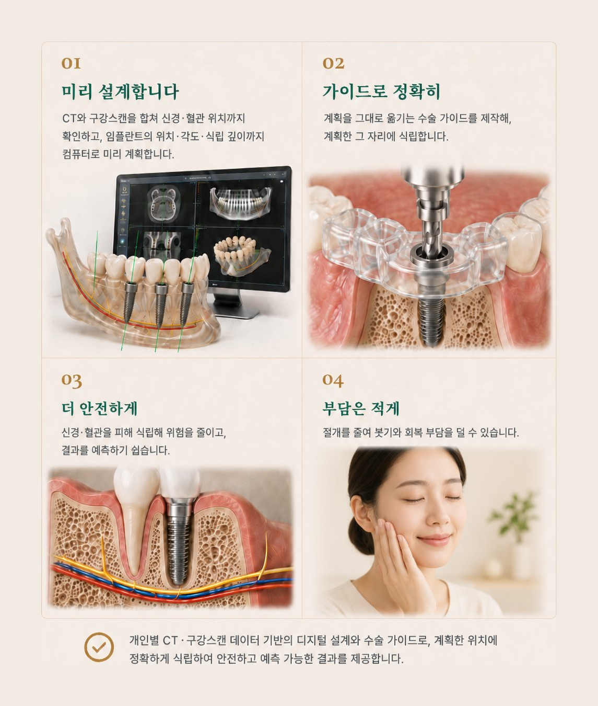

신경치료 (근관치료)
충치가 신경까지 진행되면, 염증이 생긴 신경을 제거하고 신경관을 소독·밀폐해 치아를 살립니다. 가늘고 휘어진 신경관까지 미세현미경으로 확대해 정밀하게 처치하고, 한 번 치료한 치아가 다시 아픈 경우의 재근관치료까지 대응합니다.
보존 치료
충치 부위만 최소한으로 제거하고 레진·인레이로 메워, 건강한 치아를 최대한 남깁니다. 많이 깎을수록 치아 수명이 짧아지기 때문에, 초기에 작게 치료하는 것이 오래 쓰는 길입니다.
임플란트
치아를 살리기 어려울 때, 빠진 자리에 인공 치근을 심어 자연치아에 가까운 씹는 힘을 되살립니다. CT로 뼈·신경 위치를 입체적으로 확인해 계획하고, 뼈가 부족하면 뼈이식·상악동 거상술로 토대를 만든 뒤 단계적으로 진행합니다.
보철 · 틀니
신경치료를 했거나 크게 손상된 치아는 크라운으로 덮어 깨지지 않게 보호하고 씹는 기능을 되살립니다. 치아 상태에 맞춰 지르코니아·골드 등 재료를 고르고, 치아가 많이 빠진 경우 부분틀니부터 임플란트 틀니까지 맞춤 설계합니다.
일반진료 · 검진
스케일링과 잇몸치료로 충치·잇몸병의 원인을 줄이고, 정기검진으로 작은 문제를 일찍 찾아 큰 치료를 막습니다. 아이는 불소 도포·실란트 같은 예방 진료로 충치를 미리 차단합니다. 예방이 가장 경제적인 치료입니다.
계획한 위치 그대로, 정확하게 심습니다
CT와 구강스캔 자료로 미리 설계하고, 그 계획을 그대로 옮기는 수술 가이드로 식립하는 디지털 임플란트(내비게이션 임플란트) 방식입니다.

정확히 보기 위한, 디지털 진단 장비
정확한 진단이 자연치아 보존의 출발점입니다.
미세현미경
고배율로 확대해 육안으로 보이지 않는 미세한 균열과 신경관까지 들여다봅니다. 살릴 수 있는 치아를 놓치지 않고 보존 치료의 정밀도를 높입니다. 특히 신경치료처럼 정밀함이 성패를 가르는 치료에서 큰 차이를 만듭니다.
3D 구강 스캐너
입안을 3D로 스캔해 본을 뜨는 불편함을 줄입니다. 차가운 인상재를 무는 과정이 없어 구역감이 적고, 채득한 데이터로 보철물을 정밀하게 설계해 제작 속도와 정확도를 함께 끌어올립니다.
3D X-ray (CBCT)
일반 X-ray로는 겹쳐 보이던 뼈와 신경, 치아 뿌리의 위치를 3차원 단면으로 확인합니다. 임플란트·발치·신경치료처럼 까다로운 케이스도 미리 정확하게 계획해 치료의 안전성을 높입니다.
디지털 보철 시스템
스캔 데이터를 기반으로 정교한 보철물을 제작합니다. 설계부터 가공까지 디지털로 일관되게 관리해 오차를 줄이고, 더 잘 맞고 오래가는 결과를 만듭니다.
턱에서 소리가 나거나, 입을 크게 벌리기 어려우신가요?
턱관절 장애는 생각보다 흔하지만 원인이 다양해, 무엇 때문인지 정확히 찾는 진단이 먼저입니다. 턱관절과 주변 근육, 무는 상태를 함께 살펴 단계적으로 관리합니다.
이런 증상이 있다면, 한 번 확인해 보세요
- 입을 벌리거나 다물 때 '딱' 소리가 난다
- 입이 예전만큼 크게 벌어지지 않는다
- 턱이나 귀 앞쪽이 아프다
- 음식을 씹을 때 턱이 아프거나 불편하다
- 아침에 턱이 뻐근하거나 피곤하다
- 자면서 이를 갈거나 무의식적으로 꽉 문다
- 관자놀이·얼굴 근육이 자주 뻐근하다
- 두통이나 목·어깨 결림이 함께 있다
한 가지라도 해당된다면, 턱관절 상태를 한 번 확인해 보시길 권합니다.
원인은 사람마다 다릅니다. 정확한 진단 후 교합안정장치(스플린트)와 생활습관 교정, 약물·물리치료를 상태에 맞게 조합해 단계적으로 관리합니다.